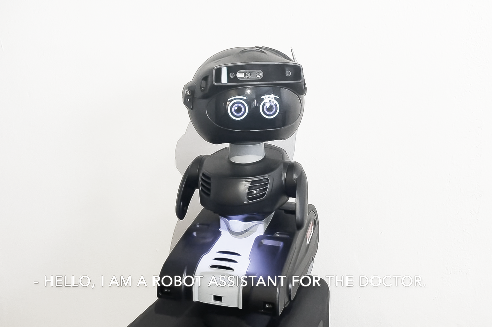

Investigating Day-to-day Experiences with Conversational Agents by Users with Traumatic Brain Injury
Yaxin Hu, Hajin Lim, Hailey Johnson, Josephine O'Shaughnessy, Lisa Kakonge, Lyn Turkstra, Melissa Duff, Catalina Toma, Bilge Mutlu.The 25th International ACM SIGACCESS Conference on Computers and Accessibility Proceedings. (Incoming, ASSETS 2023. 30%)



[Extended Abstract] A Pilot Study of Patients’ Self-disclosure and Privacy Concerns to a Conversational Social Robot in Hospitals
Jinyoung Choi*, Yaxin Hu*.International Communication Association Conference, 2022, Paris, France. (ICA 2022)